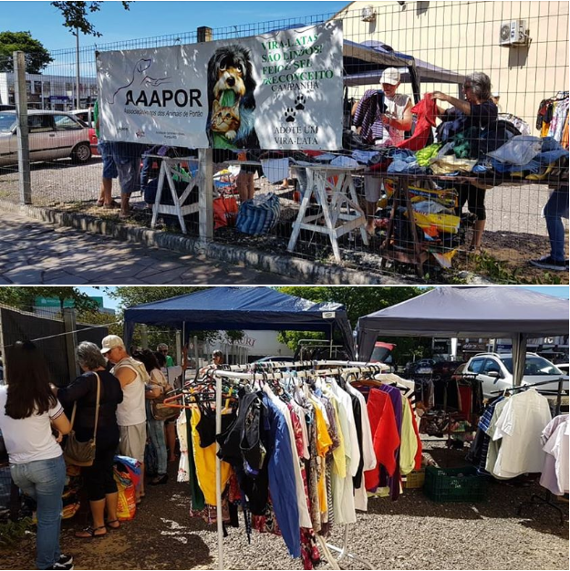

1. Faça uma doação
A AAAPOR aceita doações diversas como rações, coleiras, potes, caminhas, remédios. Como a AAAPOR conta com um brechó beneficente, também são aceitas doações de roupas, calçados, utensilhos, livros e etc
2. Cadastre-se na nota fiscal gaúcha
Passo 1: Na página inicial do site procure o link CADASTRAR.
Passo 2: inclua seu CPF e data de nascimento.
Passo 3: Preencha os demais dados e vá para a página de indicação de entidade.
Passo 4: Você poderá indicar até 5 entidades a serem beneficiadas com o programa nota fiscal gaúcha. Dentre elas estão instituições de saúde, educação, proteção animal entre outras. Selecione a opção proteção animal e após clique em concluir.
Passo 5: Inclusão de entidade: selecione a cidade de onde é a entidade que você quer ajudar, por exemplo Portão e faça a pesquisa. Irá aparecer somente a ONG AAAPOR relacionada para proteção animal município de Portão.
Passo 6: Selecione a entidade desejada e clique em SALVAR.
Passo 7: A cada compra que você fizer e registrar o CPF na nota em estabelecimentos participantes do programa nota fiscal gaúcha, você estará gerando pontos para as instituições que você o indicou no cadastro do seu CPF. Com esses pontos, as instituições participam de sorteios mensais de valores.
3. Visite nosso brechó

A AAAPOR reliza todo sábado pela manhã (8hs às 12hs) um brechó solidário para arrecadar dinheiro para instituição.
O brechó acontece no estacionamento do supermercado Rissul em Portão.